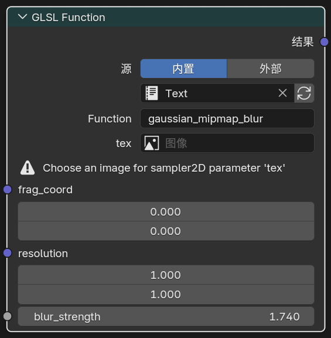
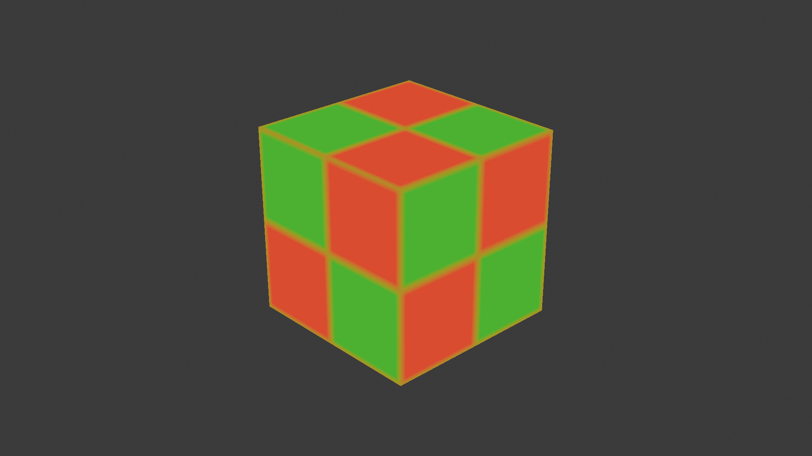
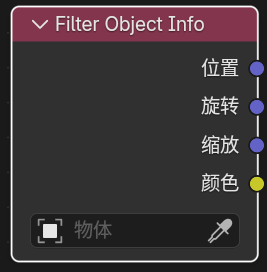

主要扩展节点¶
1. Eevee 通用辅助节点
Render Info¶
入口¶
Add > Input > Render Info

输出¶
-
Frag Coord：屏幕空间坐标（xy 归一化到 0-1，z 为深度） -
Width：渲染区域宽度 -
Height：渲染区域高度
作用¶
提供当前 Eevee 渲染窗口的坐标和像素尺寸。
Scene Time¶
入口¶
Add > Input > Scene Time

输入¶
Scale：用于缩放帧数的数值
输出¶
-
Frame：当前帧数 -
Seconds：当前帧对应的秒数 -
Timeline：0-1 映射的场景时间（从开始帧到结束帧） -
Scaled Frame：当前帧除以Scale后的结果
Screen Derivative¶
入口¶
Add > Utilities > Math > Screen Derivative

功能¶
获得屏幕之间相邻像素之间的差异：
-
DDX：X 方向的屏幕空间导数 -
DDY：Y 方向的屏幕空间导数 -
DDXY：DDX和DDY的组合（DDX + DDY）
其中 DDXY 表示 DDX + DDY。
Portal In / Portal Out¶
入口¶
-
Add > Layout > Portal In -
Add > Layout > Portal Out

功能说明¶
这是一组用来整理节点连线的“传送门”节点。
工作方式可以理解为：
-
Portal In：在当前节点树里存一个有名字、有类型的值 -
Portal Out：在同一节点树内按名字把这个值取出来继续使用
其他¶
-
新建
Portal In时会自动生成唯一名称。 -
Portal Out上带有放大镜按钮，可快速跳转到对应的Portal In位置。
限制¶
-
只在同一个 shader node tree 内识别。
-
不支持跨节点树。
-
不支持跨节点组自动穿透。
-
同名输入应只保留一个来源。
2. Eevee 物体材质节点
Render Texture¶
入口¶
Add > Texture > Render Texture

作用¶
读取前面在场景里配置好的 Render Textures 条目。
输入输出¶
-
输入：
Vector -
输出：
Color、Alpha
Screenspace Info¶
入口¶
Add > Input > Screenspace Info

输入输出¶
-
输入：
View Position（摄像机空间位置） -
输出：
Scene Color（场景颜色）、Scene Depth（场景深度值）
作用¶
获得当前的渲染缓冲颜色或深度的内容。

使用说明¶
-
渲染设置中需要打开
Raytracing -
材质选项
Render Method选择Dithered -
材质选项打开
Raytraced Transmission -
View Position默认输入为position变换到摄像机空间，再反转 z 轴

World Environment¶
入口¶
Add > Input > World Environment

输入输出¶
-
输入：
Direction（采样方向） -
输出：
Color（环境颜色）
作用¶
直接采样 Eevee 的世界环境颜色，不依赖屏幕后方是否还有几何。
说明¶
- 读取世界环境光照探头颜色，可在世界环境中调整分辨率

-
Direction不连接时，默认使用当前表面的视线方向 -
Direction连接后，可以按指定方向采样世界环境
World To Tangent¶
入口¶
Add > Utilities > Vector > World To Tangent

输入输出¶
-
输入：
Vector（世界空间方向） -
输出：
Vector（切线空间方向）
作用¶
把一个世界空间方向向量转换到当前表面的切线空间。
说明¶
- 节点面板中可指定
UV Map，该 UV 的切线会作为转换基底。
GLSL Function¶
入口¶
Add > Script > GLSL Function

在 Eevee 物体材质和 NPR Tree 中都可用。
输入输出¶
-
节点会根据当前选中的 GLSL 函数签名动态生成输入和输出
-
返回值和
out参数都会变成节点输出 -
sampler2D不会显示成可连线输入口，而是在节点面板中直接显示为图片槽位 -
sample2D会显示成Closure输入口，可连接Image to Closure或符合约定的Closure Output
作用¶
把一段用户编写的 GLSL 函数接入当前 Eevee / NPR 材质编译流程，适合做自定义数学节点、程序图案、SDF、纹理处理和小型屏幕函数封装。
基本使用方法¶
-
在
Text Editor中写好GLSL，或者准备一个外部.glsl文件。 -
添加
GLSL Function节点。 -
在节点面板中选择源码来源：
-
内置：使用Text数据块 -
外部：使用外部.glsl文件 -
点击右侧刷新按钮重新解析源码。
-
在
Function中手动选择真正要导出的函数名。 -
如果函数里有
sampler2D参数，直接在节点参数区为每个采样器选图。 -
如果函数里有
sample2D参数，使用节点连线输入：图片请通过Image to Closure，程序化纹理请连接满足UV -> Color约定的Closure Output。
当前支持的函数边界类型¶
-
输入参数：
float、vec2、vec3、vec4、sampler2D、sample2D -
输出参数：
out float、out vec2、out vec3、out vec4 -
返回值：
void、float、vec2、vec3、vec4 -
支持多输出：返回值 + 一个或多个
out参数
说明¶
-
Function为空时不会自动选第一个函数，需要手动指定 -
支持多个
sampler2D图片槽位；它们统一受Sampler Settings子面板控制 -
sample2D统一走Closure输入工作流，适合把图片和程序化纹理都交给GLSL Function -
修改
Text数据块或外部文件后，可以直接点击刷新按钮更新节点，不需要重新选文件 -
支持写在函数正上方的
@glsl_meta块注释，用来声明默认值、范围、hide_value和 subtype -
当前不支持
inout、out sampler2D、int / bool / mat* / struct / array作为函数边界类型 -
Closure Output -> GLSL Function(sample2D)当前只保证texture(tex, uv)这种直接采样形式 -
如果函数要使用依赖真实图片资源的采样方式，例如显式
LOD、grad或尺寸查询，应使用Image to Closure -
Image to Closure节点本身没有图片输入插槽，图片是在节点面板中直接选择 -
sampler2D和sample2D当前都不支持UDIM平铺图片 -
详细 GLSL 转换规范见仓库文档
docs/glsl-function-node-conversion-guide.md
sample2D 示例¶
vec4 stylize(vec2 uv, float strength, sample2D tex)
{
vec4 base = texture(tex, uv);
return mix(base, vec4(base.rgb * 1.2, base.a), strength);
}
-
如果
tex接的是Image to Closure，texture(tex, uv)会直接采样所选图片 -
如果
tex接的是Closure Output，则会按UV输入和Color输出约定读取程序化纹理结果
Meta 语法¶
GLSL Function 支持从函数正上方的块注释读取少量 Meta 信息，用来控制节点输入口的默认值、范围和显示语义。
Meta 只影响节点界面，不会改写 GLSL 函数逻辑本身。
Meta 基本格式¶
/* @glsl_meta v1
strength: default=0.5 min=0.0 max=1.0 subtype=factor
offset: default=vec3(0.0) subtype=translation
tint: default=vec3(1.0, 0.8, 0.2)
*/
vec3 stylize(vec3 base_color, float strength, vec3 offset, vec3 tint)
{
return mix(base_color, tint + offset, strength);
}
Meta 规则¶
-
Meta 必须是块注释，并且以
@glsl_meta开头 -
Meta 必须紧贴在目标函数正上方，中间不要夹别的顶层代码
-
当前是一函数一块 Meta；它只作用于正下方那个函数
-
每一行都使用
参数名: key=value key=value语法 -
建议一参数一行；当前也允许同一参数拆成多行补属性，但同一个属性不能重复
-
旧的
function some_name写法已经不再推荐 -
旧的
some_function.some_param: ...写法也不再推荐，当前建议直接写纯参数名
当前支持的 Meta 键¶
-
default-
float直接写标量，例如default=0.5 -
vec2 / vec3 / vec4必须写对应构造器，例如default=vec3(1.0, 0.8, 0.2) -
向量默认值也支持单标量广播，例如
default=vec3(0.5)会把三个分量都设为0.5
-
-
min-
设置输入口最小值，例如
min=0.0 -
对
vec*输入当前也是单个标量范围，不支持分量分别设置不同最小值
-
-
max-
设置输入口最大值，例如
max=1.0 -
对
vec*输入当前也是单个标量范围，不支持分量分别设置不同最大值
-
-
subtype-
用于设置 Blender socket subtype
-
float常用值：none、factor、percentage、angle、time、distance -
vec*常用值：none、translation、direction、euler、xyz
-
Meta 生效行为¶
-
default第一次生效时会写入 socket 默认值 -
之后如果用户手动改过节点默认值，只要 Meta 本身没变化，这个手动值会保留
-
当 Meta 内容发生变化时，节点会再同步一次新的默认值
-
min / max / subtype属于 socket 声明，会直接影响节点输入口的范围和显示方式
当前限制¶
-
只支持输入参数 Meta
-
不支持返回值 Meta
-
不支持
out参数 Meta -
不支持
sampler2DMeta -
不支持
inout -
不支持
int / bool / mat* / struct / array作为 Meta 目标参数类型 -
如果 Meta 里写了函数中不存在的参数名，会直接报错
-
如果
min > max，会直接报错
Image to Closure¶
入口¶
Add > Texture > Image to Closure

输入输出¶
- 输出：
Closure
节点面板¶
-
Image：选择要适配进sample2D工作流的图片 -
Interpolation：设置采样插值方式 -
Extension：设置超出0..1UV 范围时的扩展方式
作用¶
把一张普通图片包装成 sample2D 可消费的 Closure 源。
它主要用来给 GLSL Function(sample2D) 提供图像输入，同时保持和程序化纹理 Closure Output 相同的接线形式。
基本使用方法¶
-
添加
Image to Closure节点。 -
在节点面板中选择
Image。 -
按需要设置
Interpolation和Extension。 -
把
Closure输出连接到GLSL Function的sample2D输入。
说明¶
-
这个节点现在没有图片输入插槽，图片只在节点面板中选择
-
它是
sample2D的图像适配节点，不是普通Image Texture的替代品 -
当
sample2D需要真实图片资源支持的采样能力时，应优先使用这个节点
Basis Transform¶
入口¶
Add > Utilities > Vector > Basis Transform

输入输出¶
-
输入：
Vector（待变换的点、方向或法线） -
输入：
Origin（自定义基底的原点，仅Point模式使用） -
输入：
X Axis、Y Axis、Z Axis（自定义坐标基轴） -
输出：
Vector（变换后的结果）
作用¶
在材质节点里用 原点 + 三根基轴 来完成自定义坐标系变换，适合在没有矩阵输入类型的情况下处理点、方向向量和法线。
面板选项¶
-
Direction-
To Basis：把输入从世界 / 当前坐标解释为自定义基底下的坐标 -
From Basis：把输入从自定义基底坐标还原回外部坐标
-
-
Type-
Point：会参与Origin平移 -
Vector：只做方向 / 长度变换，不参与平移 -
Normal：按法线规则变换，并在输出前归一化
-
-
Basis Input-
XYZ：直接使用三根输入轴 -
XY/XZ/YZ：只使用两根轴，第三根轴由叉积自动补出
-
-
Orthonormalize-
开启后会把输入轴正交化并归一化，更适合做切线空间、局部朝向这类纯方向基底
-
关闭后会保留输入轴长度，可用于带缩放的基底变换
-
-
Fallback-
Pass Through：当基底退化时直接输出原始输入 -
Zero：当基底退化时输出0, 0, 0
-
SDF Primitive¶
入口¶
Add > Texture > SDF Primitive

输出¶
Distance
作用¶
在材质节点里直接生成符号距离场（SDF）基础形体，适合做程序遮罩、轮廓、形体过渡，以及后续布尔组合的基础输入。
主要模式¶
- 3D 形体：
Sphere、Box、Torus、Cone、Point Cone、Cylinder、Point Cylinder、Capsule / Line、Octahedron、Hex Prism、Hex Prism Incircle、Plane、Solid Angle、Pyramid、Disc、3D Circle - 2D 形体：
Circle、Rectangle、Ellipse、Triangle、Pentagon、Hexagon、Isosceles Triangle、Trapezoid、Rhombus - 风格化 2D：
Star、Heart、Pie、Arc、Moon、Vesica、Cross、Rounded X、Horseshoe、Round Joint、Flat Joint - 曲线 / 片段：
Line、Corner、Quadratic Bezier、Point Triangle、Quad、Parabola、Parabola Segment、Uneven Capsule
输入说明¶
- 固定基础输入为
Vector - 其余插口会按模式动态显示并重命名，常见参数有
Size、Radius、Angle、Roundness、Linewidth、Point到Point_003、Value1到Value4 - 节点面板提供
Mode和Invert
使用说明¶
- 输出的是距离值，不是颜色
- 通常配合
Math、ColorRamp、Map Range、SDF Operator等节点，把距离场转换成遮罩或最终图形 Invert可直接翻转内外关系，方便把同一形体改成“孔”或“壳”
SDF Operator¶
入口¶
Add > Converter > SDF Operator

输出¶
Distance
作用¶
对一个或两个 SDF 距离场做组合、裁切和轮廓变形，用来把多个基础形体继续拼成更复杂的结果。
主要运算¶
- 单输入：
Dilate、Onion、Annular、Mask、Flatten、Invert、Hermite Pulse - 双输入：
Blend、Exclusion XOR、Divide、Pipe、Engrave、Groove、Tongue - 并集：
Union、Smooth Union、Round Union、Columns Union、Stairs Union、Chamfer Union - 交集：
Intersect、Smooth Intersect、Round Intersect、Columns Intersect、Stairs Intersect、Chamfer Intersect - 差集：
Difference、Smooth Difference、Round Difference、Columns Difference、Stairs Difference、Chamfer Difference
输入说明¶
- 基础输入包含
Distance、Distance_001、Value、Value_001、Count - 实际显示的插口名称和数量会随
Operation自动变化 Mask模式会额外显示Invert
使用说明¶
- 常见流程是先用多个
SDF Primitive生成距离场，再通过SDF Operator做并集、交集或差集 Smooth、Round、Chamfer、Stairs、Columns这类模式适合做更有风格化过渡的布尔边界- 最终依然输出距离值，通常还需要再接阈值、颜色映射或透明度控制节点
SDF Vector Operator¶
入口¶
Add > Utilities > Vector > SDF Vector Operator

输出¶
-
Vector -
Position -
Value
作用¶
对 SDF 工作流使用的坐标域、UV 域或向量域做预处理。它可以在真正进入 SDF Primitive 之前，先把空间做镜像、重复、旋转、扭曲、分块和平铺映射。
这类节点不会直接生成距离场，而是先把“采样空间”改写掉，所以很适合放在：
Texture Coordinate / ObjectSDF Vector OperatorSDF PrimitiveSDF Operator
这样的链路中间。
主要模式分类¶
Plane Reflect、Mirror、Polar、Repeat Infinite、Repeat Infinite Mirror、Repeat Finite、Octant-
这组模式主要负责镜像、分段、循环重复和对称化空间
-
Swizzle、Rotate、Spin、Extrude、Twist、Swirl、Pinch Inflate、Radial Shear、Bend -
这组模式主要负责坐标重排、旋转和各种变形
-
UV Rotate、UV Scale、UV Grid、UV Random Rotate、UV Random Flip、UV Tileset -
这组模式主要负责 UV 的平铺、打散、旋转和子块映射
-
Map -1-1、Map -0.5-0.5、Map 0-1 - 这组模式主要负责 UV 与常见 SDF 坐标范围之间的快速映射
主要模式说明¶
Plane Reflect- 按给定法线和偏移对空间做平面反射
-
Value可作为平面两侧的辅助遮罩值 -
Mirror - 按当前
Axis指定的平面方向做镜像 Spacing控制镜像参考间距-
Position会给出镜像 / 分块后的辅助位置 -
Polar - 把平面空间改写成环形重复的扇区结构
-
适合做放射状图案、花瓣、齿轮、徽章类重复
-
Repeat Infinite -
以给定
Spacing无限重复空间 -
Repeat Infinite Mirror -
无限重复空间，但交替镜像每个单元，适合让边界方向衔接得更自然
-
Repeat Finite -
和无限重复类似，但会额外用
Count限制重复次数 -
Octant -
把空间折叠到八分体 / 象限对称区域，适合快速制作对称形体
-
Swizzle -
重新排列坐标轴顺序，例如
XYZ、XZY、YZX -
Rotate -
按
Axis选择的主轴旋转空间 -
Spin - 围绕主轴做旋转式坐标偏移
-
常用于制造旋转花纹或沿轴偏转的形体
-
Extrude - 把二维距离域向第三维拉伸成厚度
-
Value输出内部距离辅助值 -
Twist -
沿主轴对空间施加扭转
-
Swirl - 围绕中心点做旋涡式扭曲
-
Center、Offset、Strength、Radius会共同控制旋涡范围和力度 -
Pinch Inflate - 以中心区域为核心做收缩 / 膨胀
-
适合把形体向内夹紧或向外鼓起
-
Radial Shear -
做环向剪切，适合做旋转扭折感更强的图案变形
-
Bend -
沿主轴弯折空间
-
UV Rotate -
围绕
Center旋转 UV -
UV Scale -
围绕 UV 中心缩放
-
UV Grid - 把 0-1 UV 切成规则网格
Vector输出当前格子内的局部 UV-
Position输出格子坐标，适合继续做随机变化或索引 -
UV Random Rotate -
根据输入的
Position，为每个格子随机选择 90 度旋转方向 -
UV Random Flip -
根据输入的
Position，为每个格子随机翻转或旋转 -
UV Tileset - 把当前 UV 映射到一张大图中的某个子块
-
Index选择块编号，Padding控制边缘留白，Scale控制块内缩放 -
Map -1-1 -
把
0-1UV 映射到-1 到 1 -
Map -0.5-0.5 -
把
0-1UV 映射到-0.5 到 0.5 -
Map 0-1 - 把常见的 SDF 中心坐标范围重新映射回标准 UV
Bevel¶
入口¶
Add > Input > Bevel

输入输出¶
-
输入：
Radius（倒角半径）、Normal（表面法线提示） -
输出：
Normal（倒角后的近似法线）
面板选项¶
Samples（采样次数越高质量越好，性能消耗越大）
作用¶
在 Eevee 中生成近似的倒角法线，用来让硬边看起来更圆润。
说明¶
-
Cycles仍然使用官方原本的真实几何倒角算法 -
Eevee这里使用的是同物体屏幕空间近似 -
结果依赖当前视角、深度缓冲和可见邻域，不等同于
Cycles的真实Bevel
Curvature¶
入口¶
Add > Input > Curvature

输入¶
-
Samples -
Sample Radius -
Thickness -
Scale
输出¶
-
Scene Curvature：根据屏幕空间提取的曲率值 -
Scene Rim：边缘光
面板选项¶
Local：忽略其他物体深度
说明¶
移植自 Goo Engine 的曲率节点，提供曲率和边缘光输出。
Shader Info¶
入口¶
Add > Input > Shader Info

输入¶
-
World Position：世界空间位置（默认使用当前位置） -
Normal：表面法线（默认使用当前平滑法线）
输出¶
-
Diffuse Shading：兰伯特光照 -
Shadow：遮蔽阴影 -
Ambient Lighting：环境间接光（来自世界环境 + 光照探针） -
Half-Lambert Factor：半兰伯特光照
说明¶
-
Shadow-
可切换阴影模式
-
Built-in：默认模式，使用 Eevee 原本的阴影计算 -
Soft Filtered：把黑白抖动阴影变成更平滑的灰度半影
-
-
节点面板新增
Lightgroup- 只有
Lightgroup ID相同的灯光，才会参与这个Shader Info节点的直接光照与阴影计算
- 只有

- 当前实现会排除 world sun 对这些输出的干扰，避免 HDRI 或世界环境里的“太阳光”混入直接结果。
Light Info¶
入口¶
Add > Input > Light Info

功能说明¶
读取指定灯光信息。
固定输出¶
-
Color：灯光颜色 -
Power：灯光强度 -
Type：灯光类型-
-1：没有指定灯光 -
0：Point -
1：Sun -
2：Spot -
3：Area
-
按灯光类型自动出现的输出¶
-
Position：灯光世界位置 -
Direction：灯光方向 -
Radius：灯光半径 -
Spot Size：灯光尺寸 -
Sun Angle：太阳角度
说明¶
- 如果你要做逐灯处理，应该使用
NPR Tree里的For Each Light。
Filter Object Info¶
入口¶
Add > Input > Filter Object Info

仅在 Filter 域下可用。
作用¶
读取指定对象的世界空间变换和视口显示颜色，让滤镜材质可以跟随控制物体或场景辅助物体变化。
它适合用来做基于对象驱动的遮罩、方向渐变、移动焦点特效，或者把一个对象颜色直接传给全屏滤镜。
节点设置¶
Object：指定要读取的对象
输出¶
-
Location：所选对象的世界空间位置 -
Rotation：所选对象的世界空间欧拉旋转，单位为弧度 -
Scale：所选对象的世界空间缩放 -
Color：所选对象的视口显示颜色
说明¶
-
这里读取的是明确指定的对象，不是当前屏幕上正在被滤镜处理的对象
-
如果没有指定对象，节点会回退到默认值：位置 / 旋转 / 颜色为
0，缩放为1
Scene Color¶
入口¶
Add > Input > Scene Color

仅在 Filter 域下可用。
作用¶
读取 Eevee 当前场景缓冲，可在节点面板中切换 Source：
-
Color：读取渲染的最终场景颜色 -
Depth：读取线性深度值 -
Normal：读取渲染法线 -
Position：读取世界空间坐标
输入输出¶
-
输入：
Vector -
输出：
Color、Alpha